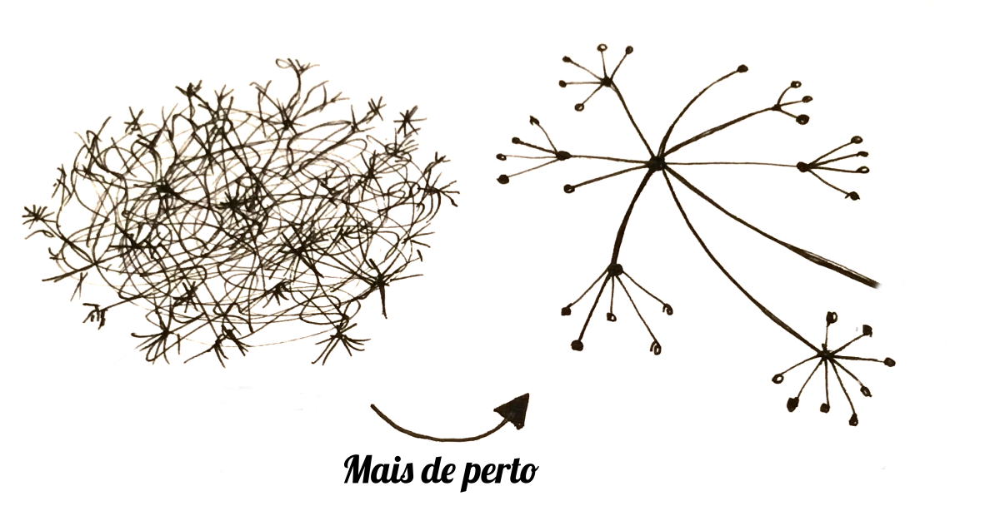
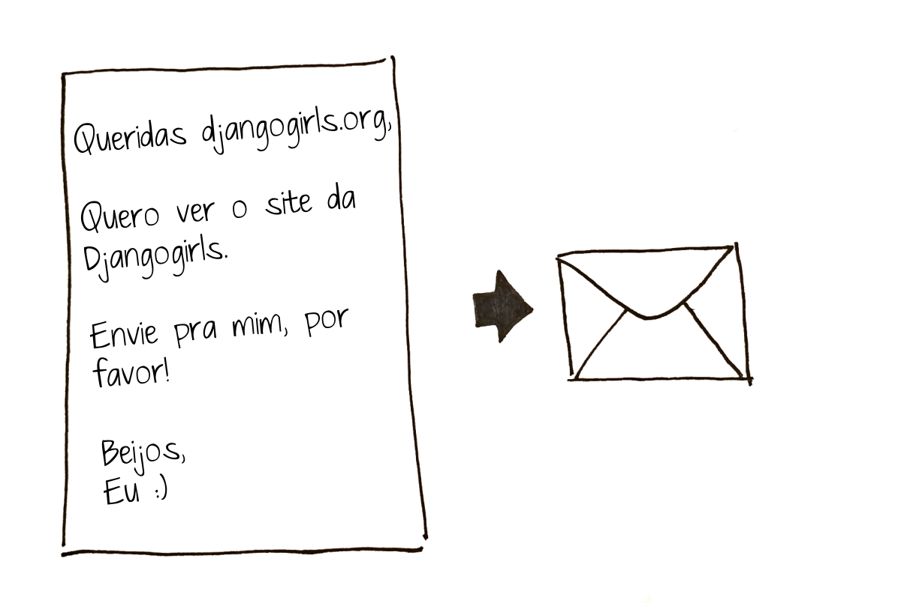

Como funciona a internet?
Tutorial Django Girls, adaptado por Renata (@rsip22) e Liliane (@liliane_lewis)
Original disponível em: http://tutorial.djangogirls.org/pt/how_the_internet_works/
O que é a internet?
A internet é uma rede de máquinas conectadas. São centenas de milhares de máquinas! Muitos, muitos quilômetros de cabos em todo o mundo! O cabo do seu computador, o cabo do seu escritório, o cabo da sua empresa, todos ligados uns aos outros mesmo que indiretamente - e, por sua vez, ligados a outros e outros cabos que se conectam como uma teia (por isso o nome "web", teia, em inglês). Veja!
Cada pontinho desses é um computador ou um celular ou um dispositivo qualquer com capacidade de conexão.
Caminho da internet
Mas você sabe como tudo funciona? Sabe o que acontece quando você digita um endereço como https://djangogirls.org em seu navegador e pressiona 'Enter'?
Imagine que quando você digita um endereço, você envia uma carta, que chamaremos de pacotes de dados, que diz:
Ao invés de endereços com o nome da rua, cidade, código postal e nome do país, nós usamos endereços IP (IP - Protocolo de Internet). Primeiro seu computador pergunta pelo DNS (Domain Name System - Sistema de Nome de Domínio) para traduzir djangogirls.org para o endereço IP do servidor do site djangogirls.org.
Quando você envia uma carta, ela precisa ter certas características para ser entregue corretamente: um endereço, selo, etc. Você também usa uma linguagem que o receptador compreende, certo? O mesmo acontece com pacotes de dados que você envia para ver um site: você usa um protocolo chamado HTTP (Hypertext Transfer Protocol - Protocolo de Transferência de Hipertexto) - ou HTTPS, a versão criptografada e mais segura do HTTP.
Então, basicamente, quando você tem um site você precisa ter um servidor (máquina) onde ele os arquivos do site ficarão hospedados. O servidor precisa ficar ligado e conectado o máximo de tempo possível, à espera de quaisquer requisições recebidas (cartas que solicitam ao servidor o envio do seu site), para enviar de volta os arquivos que compõem seu site (em outras cartas).
Como este é um tutorial de Django você vai perguntar o que o Django faz. Quando envia uma resposta nem sempre você quer enviar a mesma coisa para todo mundo. É muito melhor se suas cartas são personalizadas, especialmente para a pessoa que acabou de escrever para você, certo? O Django ajuda você a criar essas personalizadas e interessantes cartas :). Então...